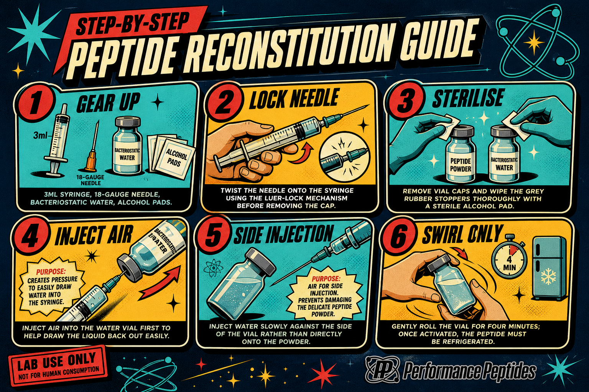
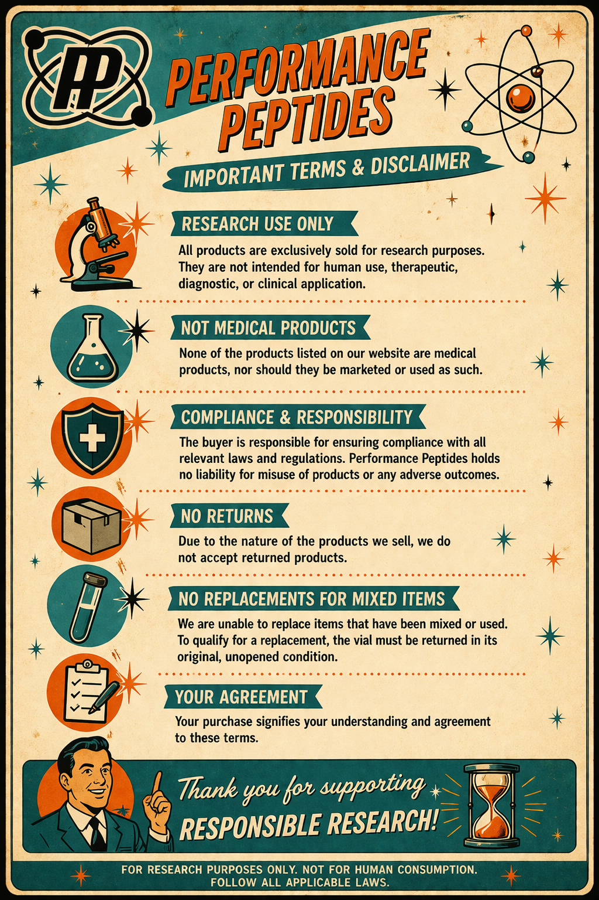

Reconstitution Guide

6-step infographic: Gear Up → Lock Needle → Sterilise → Inject Air → Side Injection → Swirl Only.
Deep Dive →Five new on-brand assets dropped into /pep/ — reconstitution guide, favicon pack, 20 COAs, themed disclaimer, white logo set. Below is the full inventory, what's ready, what needs verification, and exactly where each asset goes on the live WooCommerce store.
Inventory · Click any card to deep-dive

6-step infographic: Gear Up → Lock Needle → Sterilise → Inject Air → Side Injection → Swirl Only.
Deep Dive →Full multi-resolution pack: 16, 32, 48, 64, 128, 180 (Apple), 192 (PWA), 256, 512 + favicon.ico.
Deep Dive →20 third-party lab COAs (AOD-9604 through VIP). Remaining ~31 products need "COA on request" UX or pending lab work.
Deep Dive →
6-section retro poster: Research Use Only, Not Medical Products, Compliance, No Returns, No Mixed Replacements, Your Agreement.
Deep Dive →
Atom-only + wide lockup variants. Preview shows BLACK pixels — confirm with image editor before deploy.
Deep Dive →Step-by-step rollout: auto-inject 01+04, attach COAs to products, install favicons in <head>, swap white logo into header.
View Roadmap →At a glance · Status of every asset
| # | Asset | Files | Status | Where it lives | Action needed |
|---|---|---|---|---|---|
| 01 | Reconstitution Guide | 1 PNG | ✓ Ready | Product gallery, image #2 | Auto-inject via PHP hook |
| 02 | Web Icon Pack | 10 files | ✓ Ready | <head> + Customizer |
Install in WP Site Identity |
| 03 | COA PDFs | 20 PDFs | ⚠ Partial (20/51) | Per-product meta _pp_coa_url |
Upload + match by SKU |
| 04 | Disclaimer Poster | 1 PNG | ✓ Ready | Product gallery, image #3 | Auto-inject via PHP hook |
| 05 | White Logo Set | 2 PNGs | ❓ Verify | WoodMart Header Builder | Confirm pixels are white |
PP ATOM WIDE LOGO white.png in Photoshop / GIMP / Figma and confirm the pixel colour. If actually black, request the proper white variant from the client.
Recommended sequence · 1 → 4
#FFF. If #000, request real white variant. 5 min.wp_head for the apple-touch + PWA tags. ~15 min.